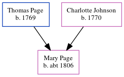

Mary Ann Page c1806 -
[ Home ] | [ Calendar ] | [ Surnames Index ] | [ Errors ] | [ Family History ]The child of Thomas Page and Charlotte Johnson, Mary Page, the four times great-aunt of Nigel Horne, was born in Newchurch, Kent, England c. 18061.
During her life, she was living at Cold Ham Farm, Little Chart, Kent, England on 6 Jun 18412; and in Westwell, Kent, England in 18511.
Parents
- Thomas was born in 1769
- Charlotte was born in 1770
Citations
- 1851 England Census Online publication - Provo, UT, USA: The Generations Network, Inc., 2005.Original data - Census Returns of England and Wales, 1851. Kew, Surrey, England: The National Archives of the UK (TNA): Public Record Office (PRO), 1851. Data imaged from the National (Relation to Head of House: Daughter)
- 1841 England, Wales & Scotland Census - Findmypast (was age 35)
Media
1841 England, Wales & Scotland Census - GBC/1841/0014002710
Family Tree
Map
Generated by ged2site. Last updated on Jul 3, 2024
Known Issues
May have been living with father on 1851, but the addresses don't match or aren't detailed enough to be sure